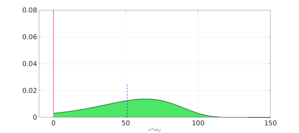

In a previous Chebfun example we presented a methodology for the calculation of a call option (see the example "Pricing a European Call Option"). In this example we study further this method by applying it to other contracts: the put option, the digital option, and the power option. Since we already explained in some detail its conceptual framework, we mainly focus on the implementation aspect, highlighting the most relevant features for each contract.
Throughout this example we assume the underlying asset is governed by a geometric Brownian motion (GBM) process. We start by defining the price of the asset at time $t=0$, $S_0$, its volatility $\sigma$ and the risk-free interest rate $r$. We also construct a chebfun for the probability density function (PDF) of the asset distribution at expiring time $T$.
S0 = 100;
vol = 0.45;
r = 0.01;
T = 0.5;
maxS = 10000;
lognHnd = @(S) exp( - ( log(S/S0) - (r-0.5*vol^2)*T ).^2./(2*vol^2*T) ) ./ ...
(vol*S*sqrt(2*pi*T));
lognPDF = chebfun(@(S) lognHnd(S), [0 maxS]);
lognCDF = cumsum(lognPDF);
LW = 'linewidth';
INT = 'interval';
FS = 'fontsize'; fs = 14;
plot(lognPDF,LW,1.6,'k',INT,[0 200]);
ylim([0 0.015])
xlabel('S_T',FS,fs), set(gca,FS,fs)
set(gca,'YTick',0:0.003:0.015), grid on,
European Put Option
The payoff of a put option is given by $V(S_T) = \max(0,K-S)$, where $K$ is the strike.
K = 150;
T = 0.5;
maxSplot = 250;
maxV = K;
put = chebfun(@(S) max(0,K-S), [0 K maxSplot]);
plot(put,LW,1.6,'k','interval',[0 maxSplot]),
xlabel('S',FS,fs)
ylabel('V(S)',FS,fs); set(gca,FS,fs);
ylim([-10 K])
For a put option the out-of-the-money (OOM) region is $[K,\infty)$, and the probability of expiring there is
probOOM = 1-lognCDF(K)
probOOM = 0.078148029367942
As we have seen in our previous example, the contribution of the OOM region to the payoff PDF is a Dirac delta with weight equal to the probability of expiring OOM and located at zero (the constant OOM payoff).
x = chebfun('x',[0 maxV]);
OOM = 2*probOOM*dirac(x);
The contribution of the in-the-money (ITM) region, $S\in[0,K]$, to the payoff distribution can be calculated by the simple rule
\begin{equation} g(y) = f(x(y)) \Bigl|\frac{dx}{dy}\Bigr|, \label{eq1} \end{equation}
where $g$ is the contribution to the payoff PDF, $x$ is the asset distribution, and $y$ is the function of the ITM payoff, i.e., $y(x) = K - x$. We construct a chebfun for the ITM contribution, but define it on $[0,K]$ as the range of the payoff is $[0,K]$, attaining the maximum at $S = 0$.
ITM = chebfun(@(S) lognHnd (K-S)*(1), [0 maxV]);
The discounted PDF of the payoff is the sum of both components, multiplied by the term $exp(-rT)$. Its expected value is the price of the put option.
payoffPDF = exp(-r*T) * ( OOM + ITM );
approx = sum(x.*payoffPDF);
payoffPDF_area = area(payoffPDF{0,maxV});
set(payoffPDF_area,'FaceColor',[0.3 0.9 0.4]), axis auto
hold on,
plot(payoffPDF,LW,1.6,'k','deltaline','r'), grid on
xlabel('e^{-rT}V(S_T)',FS,fs)
xlim([-10 K]), ylim([0 0.08])
plot([approx approx],[0 0.025],'b--',LW,1.6), hold off
disp(['approx = ', num2str(approx,'%10.15f')])
approx = 51.166911483849546

An analytical expression for the price of a put option is given by the following Black-Scholes formula (the price of a call with the same parameters can be obtained by change the value $W=-1$ to $W=1$):
d1 = (log(S0./K) + (r+0.5*vol.^2).*T)./(vol.*sqrt(T)); d2 = d1 - vol.*sqrt(T); W = -1; exact = W.*( S0 .* normcdf(W.* d1) - K .* normcdf(W.* d2) .* exp(-r .* T) ); disp(['exact = ', num2str(exact,'%10.15f')]) disp(['approx = ', num2str(approx,'%10.15f')])
exact = 51.166911483849546 approx = 51.166911483849546
Digital Options
The next option we consider is the European digital (also called binary or cash-or-nothing option) which can be of type call or put.
The digital call with strike $K$ has the payoff $V(S_T) = 1$ if $S_T>K$ and $V(S_T) = 0$ otherwise.
K = 100;
T = 0.5;
maxSplot = 200;
S = chebfun('S',[0 maxSplot]);
digital = heaviside(S-K);
LW = 'linewidth';
FS = 'fontsize'; fs = 14;
plot(digital,LW,1.6,'k'),
xlabel('S',FS,fs)
ylabel('V(S)',FS,fs); set(gca,FS,fs);
ylim([-.1 1.1])
Since the payoff is a piecewise constant function, the PDF of the digital option correspond to two Dirac deltas and the price is the expected value.
maxV = 1;
probOOM = lognCDF(K);
probITM = 1 - probOOM;
x = chebfun('x',[0 maxV]);
OOM = 2*probOOM*dirac(x);
ITM = 2*probITM*dirac(x-1);
payoffPDF = exp(-r*T) * ( OOM + ITM );
approx = sum(x.*payoffPDF);
plot(OOM,LW,1.6,'r'), hold on
plot(ITM,LW,1.6,'g'), grid on,
xlabel('e^{-rT}V(S_T)',FS,fs)
xlim([-0.5 1.5])
plot([approx approx],[0 0.3],'b--',LW,1.6), hold off
disp(['approx = ', num2str(approx,'%10.15f')])
approx = 0.440783414443267
The price of a European digital call has a closed-form solution which we use to compare the accuracy of our approximation:
d1 = (log(S0./K) + (r+0.5*vol.^2).*T)./(vol.*sqrt(T)); d2 = d1 - vol.*sqrt(T); W = 1; exact = normcdf(W.*d2)*exp(-r*T); disp(['exact = ', num2str(exact,'%10.15f')]) disp(['approx = ', num2str(approx,'%10.15f')])
exact = 0.440783414443270 approx = 0.440783414443267
Power Options
The last contract we present in this example is the European power option which, as the digital option, can be of call or put type. The payoff of the power call with parameter $\alpha$ is $V(S_T) = max(0,S_T^\alpha - K)$, where $\alpha>0$ and $K$ is the strike.
We show the calculation for a choice of $\alpha<1$. In this case the OOM region is $S\in[0,K^{1/\alpha}]$.
K = 9.1;
alpha = 0.5; alphainv = 1/alpha;
T = 0.5;
maxS = 1000;
pow = chebfun(@(S) max(0,S.^alpha - K), [0 K^alphainv maxS]);
plot(pow,LW,1.6,'k'),
xlabel('S',FS,fs)
ylabel('V(S)',FS,fs); set(gca,FS,fs);
The following block of code performs all the steps we have discussed before but for a power call. Notice how the ITM chebfun is constructed following formula (\ref{eq1}), with $y(x) = x^\alpha - K$.
probOOM = lognCDF(K^alphainv);
maxV = 50;
x = chebfun('x',[0 maxV]);
OOM = 2*probOOM*dirac(x);
ITM = chebfun(@(S) lognHnd((S+K).^alphainv).*abs(alphainv*(S+K).^(alphainv-1)),[0 maxV]);
payoffPDF = exp(-r*T) * ( OOM + ITM );
approx = sum(x.*payoffPDF);
payoffPDF_area = area(payoffPDF{0,maxV});
set(payoffPDF_area,'FaceColor',[0.3 0.9 0.4]), axis auto
hold on,
plot(payoffPDF,LW,1.6,'k','deltaline','r'), grid on
xlabel('e^{-rT}V(S_T)',FS,fs)
xlim([-.5 10])
plot([approx approx],[0 0.3],'b--',LW,1.6), hold off
disp(['approx = ', num2str(approx,'%10.15f')])
approx = 1.078491451154445
It is difficult to assess whether power options are traded more or less than digitals, but certainly they are found less regularly in the literature. The analytical formula of a power option can be found in Question 2.32 of [1], while [2] reviews some of its applications.
d1 = (log(S0./K^alphainv) + (r+(alpha-0.5)*vol.^2).*T)./(vol.*sqrt(T)); d2 = d1 - alpha*vol.*sqrt(T); m = (r+0.5*alpha*vol^2)*(alpha-1); exact = S0^alpha * exp(m*T) * normcdf(d1) - exp(-r*T)*K*normcdf(d2); disp(['exact = ', num2str(exact,'%10.15f')]) disp(['approx = ', num2str(approx,'%10.15f')])
exact = 1.078491451154441 approx = 1.078491451154445
References
-
T.F. Crack, Heard on the Street: Quantitative Questions from Wall Street Job Interviews, Timothy Crack; Revised 15th Ed edition, 2014.
-
R.G. Tompkins, "Power options: hedging nonlinear risks", Journal of Risk 2 (Winter 1999/2000), 29--45.